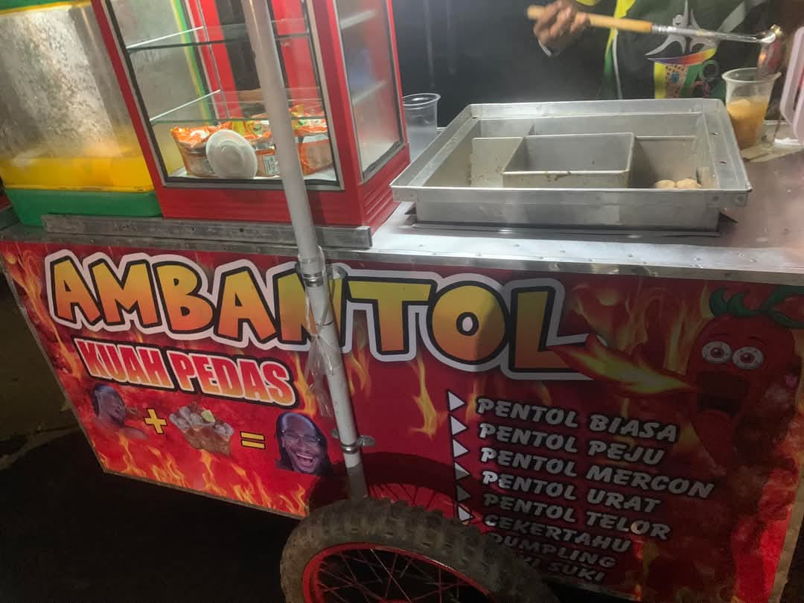

AMBANTOL
Ambantol: Sensasi Pentol Lezat yang Sedang Naik Daun
Belakangan ini, nama Ambantol semakin populer di kalangan pecinta kuliner, terutama di kalangan anak muda. Dikenal dengan pentolnya yang lezat dan menggugah selera, Ambantol berhasil menarik perhatian banyak orang, terutama para suki liar . Salah satu varian yang paling diminati adalah pentol pedas keju, yang menjadi favorit banyak orang. Apa yang membuat Ambantol begitu spesial? Mari kita ulas lebih dalam 😹